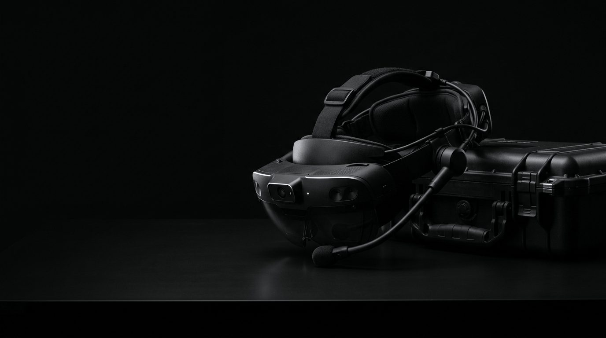

EVA
Покажите. Спросите. Продолжайте
Чтобы помочь специалисту, нужно знать, какой узел перед ним, что уже сделано и что изменилось.
EVA хранит эту последовательность, связывает наблюдения с инструкциями и избавляет от переключения между работой и поиском материалов.


Помощь в нужный момент
Из чего складывается подсказкаКамера определяет объект, голос уточняет вопрос, документация и данные оборудования готовят ответ под текущий этап работы.
Работа с оборудованием
Основные сценарии

Возможности
Помощник, который понимает задачуВажные рекомендации идут с источником и оценкой уверенности. Если данных мало, EVA просит уточнить.
Камера, вопросы и показания датчиков дополняют друг друга и точнее описывают состояние оборудования.
Смартфон или совместимое носимое устройство, экран или голос — под оборудование и задачу.

Основные функции работают с сохраненными знаниями. Возможности зависят от данных и мощности устройства.
Запросить презентацию
Расскажите о задаче — подготовим материалы под ваш сценарий. Подробности передаются после соглашения о конфиденциальности.
Ответ в течение двух рабочих дней.